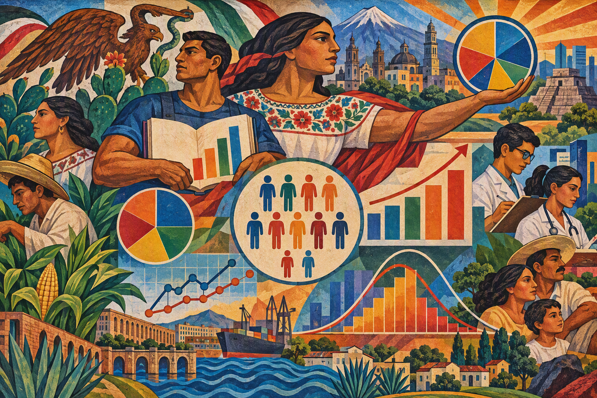
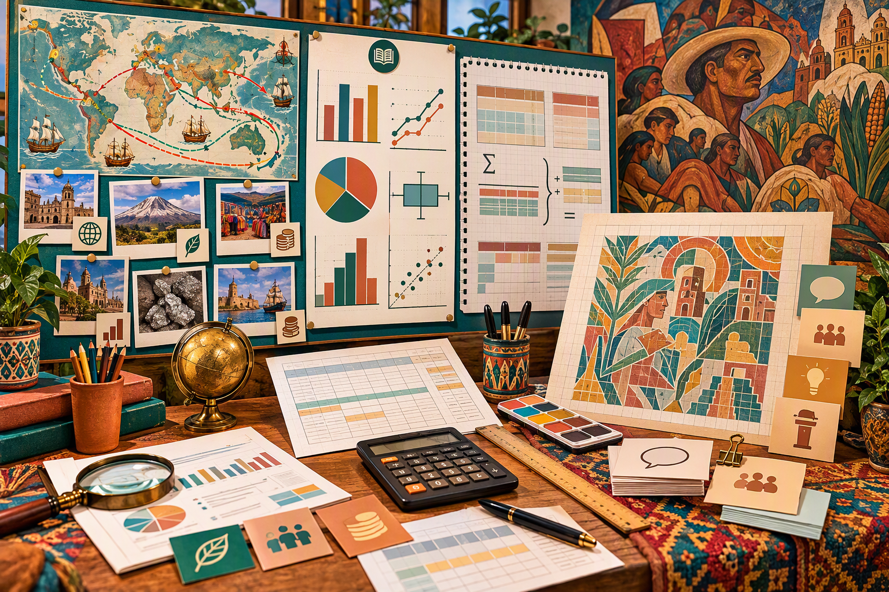

Visión general
Este módulo guía al alumnado para transformar datos sociales en representaciones visuales responsables. Aprende a valorar una fuente, definir la población y la variable estudiadas, calcular indicadores, construir gráficos adecuados y traducir algunos resultados en signos visuales proporcionales. Cada producción debe indicar la fuente, la fecha, la población, la variable, la unidad, el cálculo o la regla de construcción, un procedimiento de verificación y los límites de la interpretación.
¿Cómo representar realidades sociales a partir de datos fiables, sin manipular los gráficos, sin sobreinterpretar los resultados y sin reducir a las personas afectadas a simples valores numéricos?
Las cinco sesiones
Sesión 1 — ¿De dónde proceden los datos?
60 minutos
Situación-problema: Dos fuentes ofrecen valores diferentes para un indicador demográfico presentado como idéntico. El alumnado comprueba si la diferencia procede de la fecha, la unidad, la definición del indicador, la población, el territorio considerado o el método de recogida.
Desarrollo detallado
- Formular una pregunta estadística precisa e identificar el territorio, el periodo y la población estudiada.
- Comparar dos fuentes mediante una rúbrica: organismo, fecha, método, definición, unidad y cobertura.
- Identificar población, individuo estadístico, variable, tipo de variable y unidad de medida.
- Decidir si los datos son comparables y documentar cualquier diferencia de definición o recogida.
- Completar una ficha de metadatos y formular una limitación de interpretación.
Producción esperada: Ficha de metadatos, tabla validada, justificación de comparabilidad y limitación explícita.
Sesión 2 — ¿Qué indicador resume mejor una serie?
60 minutos
Situación-problema: Dos series tienen la misma media, pero medianas y dispersiones diferentes. El alumnado explica por qué un indicador de tendencia central no basta, por sí solo, para describir una distribución.
Desarrollo detallado
- Ordenar la serie y comprobar el tamaño, los datos ausentes y los posibles valores atípicos.
- Calcular la media mostrando suma y tamaño, y determinar la mediana según la paridad del número de datos.
- Determinar los cuartiles según la convención elegida y calcular rango y rango intercuartílico Q3 − Q1.
- Comparar dos series con la misma media pero medianas o dispersiones diferentes.
- Elegir los indicadores adecuados y justificar la elección sin confundir resumen y descripción completa.
Producción esperada: Cálculos comprobables de media, mediana, cuartiles, rango y rango intercuartílico con elección justificada.
Sesión 3 — ¿Cómo representar los datos con honestidad?
60 minutos
Situación-problema: Dos gráficos construidos a partir de los mismos datos producen una impresión diferente. El alumnado estudia el efecto del tipo de gráfico, la escala, el encuadre, los colores, el orden de las categorías y un posible eje truncado, y justifica la opción elegida.
Desarrollo detallado
- Identificar la naturaleza de los datos y la pregunta que debe responder el gráfico.
- Elegir una representación adecuada: barras para categorías, línea para evolución e histograma para intervalos continuos.
- Construir título, fuente, ejes, unidades, categorías, escala y leyenda antes del diseño visual.
- Crear una segunda versión deliberadamente engañosa y explicar el efecto del encuadre, los colores o el eje truncado.
- Elegir la versión más honesta y redactar qué muestra y qué no permite afirmar.
Producción esperada: Gráfico honesto completo, contraejemplo engañoso anotado y conclusión prudente.
Sesión 4 — ¿Cómo puede un mural representar datos?
60 minutos
Situación-problema: A partir de un gráfico validado, el alumnado diseña un mural estadístico inspirado en la función pública, colectiva y narrativa del muralismo mexicano. Conserva la fuente, las unidades, la leyenda y las proporciones, y distingue los datos de su interpretación visual.
Desarrollo detallado
- Estudiar la función pública, colectiva y narrativa del muralismo mexicano con un soporte contextualizado.
- Seleccionar dos o tres resultados estadísticos ya comprobados y definir el mensaje ciudadano.
- Asociar cada dato a una regla visual: longitud proporcional, repetición unitaria, clase de color o área proporcional.
- Calcular las dimensiones; si el área de un círculo es proporcional a un valor v, usar un radio proporcional a √v y no a v.
- Realizar una maqueta con fuente, unidad, leyenda y separación visible entre dato, símbolo e interpretación.
Producción esperada: Maqueta de mural estadístico con cálculo de dimensiones, fuente, unidad, leyenda y regla de proporcionalidad.

Sesión 5 — Presentar y defender un mural estadístico
60 minutos
Situación-problema: El alumnado presenta sus datos, cálculos, gráfico y mural estadístico. Distingue los resultados observados, su interpretación y aquello que los datos no permiten afirmar.
Desarrollo detallado
- Organizar el expediente final: metadatos, serie, cálculos, gráfico, maqueta y bibliografía.
- Preparar una exposición breve con pregunta, método, resultado principal, interpretación y limitación.
- Mostrar un cálculo y una comprobación, no solamente anunciar el resultado.
- Anticipar una objeción sobre la fuente, el indicador, la escala o la regla visual y preparar una respuesta argumentada.
- Presentar, responder a preguntas y completar una autoevaluación sobre exactitud, claridad, prudencia y calidad lingüística.
Producción esperada: Presentación oral en español apoyada en el expediente completo y respuesta argumentada a una objeción.
